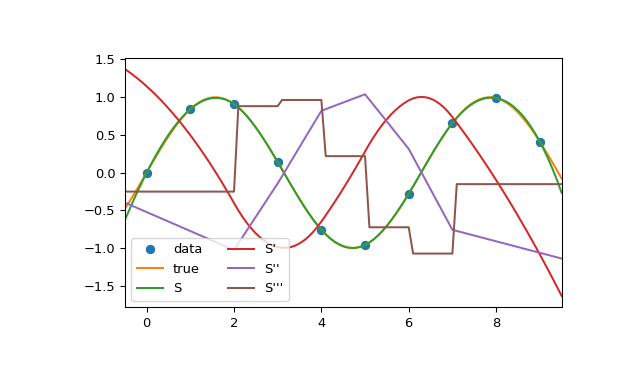
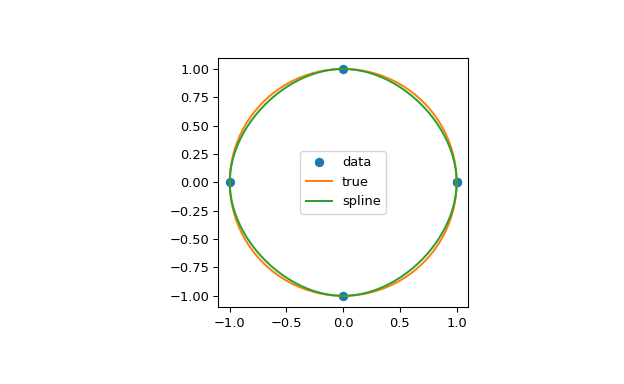

scipy.interpolate.CubicSpline¶
-
class
scipy.interpolate.CubicSpline(x, y, axis=0, bc_type='not-a-knot', extrapolate=None)[source]¶ Cubic spline data interpolator.
Interpolate data with a piecewise cubic polynomial which is twice continuously differentiable [R0cc18619484f-1]. The result is represented as a
PPolyinstance with breakpoints matching the given data.- Parameters
- xarray_like, shape (n,)
1-D array containing values of the independent variable. Values must be real, finite and in strictly increasing order.
- yarray_like
Array containing values of the dependent variable. It can have arbitrary number of dimensions, but the length along
axis(see below) must match the length ofx. Values must be finite.- axisint, optional
Axis along which y is assumed to be varying. Meaning that for
x[i]the corresponding values arenp.take(y, i, axis=axis). Default is 0.- bc_typestring or 2-tuple, optional
Boundary condition type. Two additional equations, given by the boundary conditions, are required to determine all coefficients of polynomials on each segment [R0cc18619484f-2].
If bc_type is a string, then the specified condition will be applied at both ends of a spline. Available conditions are:
‘not-a-knot’ (default): The first and second segment at a curve end are the same polynomial. It is a good default when there is no information on boundary conditions.
‘periodic’: The interpolated functions is assumed to be periodic of period
x[-1] - x[0]. The first and last value of y must be identical:y[0] == y[-1]. This boundary condition will result iny'[0] == y'[-1]andy''[0] == y''[-1].‘clamped’: The first derivative at curves ends are zero. Assuming a 1D y,
bc_type=((1, 0.0), (1, 0.0))is the same condition.‘natural’: The second derivative at curve ends are zero. Assuming a 1D y,
bc_type=((2, 0.0), (2, 0.0))is the same condition.
If bc_type is a 2-tuple, the first and the second value will be applied at the curve start and end respectively. The tuple values can be one of the previously mentioned strings (except ‘periodic’) or a tuple (order, deriv_values) allowing to specify arbitrary derivatives at curve ends:
order: the derivative order, 1 or 2.
deriv_value: array_like containing derivative values, shape must be the same as y, excluding
axisdimension. For example, if y is 1-D, then deriv_value must be a scalar. If y is 3-D with the shape (n0, n1, n2) and axis=2, then deriv_value must be 2-D and have the shape (n0, n1).
- extrapolate{bool, ‘periodic’, None}, optional
If bool, determines whether to extrapolate to out-of-bounds points based on first and last intervals, or to return NaNs. If ‘periodic’, periodic extrapolation is used. If None (default),
extrapolateis set to ‘periodic’ forbc_type='periodic'and to True otherwise.
See also
Notes
Parameters bc_type and
interpolatework independently, i.e. the former controls only construction of a spline, and the latter only evaluation.When a boundary condition is ‘not-a-knot’ and n = 2, it is replaced by a condition that the first derivative is equal to the linear interpolant slope. When both boundary conditions are ‘not-a-knot’ and n = 3, the solution is sought as a parabola passing through given points.
When ‘not-a-knot’ boundary conditions is applied to both ends, the resulting spline will be the same as returned by
splrep(withs=0) andInterpolatedUnivariateSpline, but these two methods use a representation in B-spline basis.New in version 0.18.0.
References
- R0cc18619484f-1
Cubic Spline Interpolation on Wikiversity.
- R0cc18619484f-2
Carl de Boor, “A Practical Guide to Splines”, Springer-Verlag, 1978.
Examples
In this example the cubic spline is used to interpolate a sampled sinusoid. You can see that the spline continuity property holds for the first and second derivatives and violates only for the third derivative.
>>> from scipy.interpolate import CubicSpline >>> import matplotlib.pyplot as plt >>> x = np.arange(10) >>> y = np.sin(x) >>> cs = CubicSpline(x, y) >>> xs = np.arange(-0.5, 9.6, 0.1) >>> fig, ax = plt.subplots(figsize=(6.5, 4)) >>> ax.plot(x, y, 'o', label='data') >>> ax.plot(xs, np.sin(xs), label='true') >>> ax.plot(xs, cs(xs), label="S") >>> ax.plot(xs, cs(xs, 1), label="S'") >>> ax.plot(xs, cs(xs, 2), label="S''") >>> ax.plot(xs, cs(xs, 3), label="S'''") >>> ax.set_xlim(-0.5, 9.5) >>> ax.legend(loc='lower left', ncol=2) >>> plt.show()
In the second example, the unit circle is interpolated with a spline. A periodic boundary condition is used. You can see that the first derivative values, ds/dx=0, ds/dy=1 at the periodic point (1, 0) are correctly computed. Note that a circle cannot be exactly represented by a cubic spline. To increase precision, more breakpoints would be required.
>>> theta = 2 * np.pi * np.linspace(0, 1, 5) >>> y = np.c_[np.cos(theta), np.sin(theta)] >>> cs = CubicSpline(theta, y, bc_type='periodic') >>> print("ds/dx={:.1f} ds/dy={:.1f}".format(cs(0, 1)[0], cs(0, 1)[1])) ds/dx=0.0 ds/dy=1.0 >>> xs = 2 * np.pi * np.linspace(0, 1, 100) >>> fig, ax = plt.subplots(figsize=(6.5, 4)) >>> ax.plot(y[:, 0], y[:, 1], 'o', label='data') >>> ax.plot(np.cos(xs), np.sin(xs), label='true') >>> ax.plot(cs(xs)[:, 0], cs(xs)[:, 1], label='spline') >>> ax.axes.set_aspect('equal') >>> ax.legend(loc='center') >>> plt.show()
The third example is the interpolation of a polynomial y = x**3 on the interval 0 <= x<= 1. A cubic spline can represent this function exactly. To achieve that we need to specify values and first derivatives at endpoints of the interval. Note that y’ = 3 * x**2 and thus y’(0) = 0 and y’(1) = 3.
>>> cs = CubicSpline([0, 1], [0, 1], bc_type=((1, 0), (1, 3))) >>> x = np.linspace(0, 1) >>> np.allclose(x**3, cs(x)) True
- Attributes
- xndarray, shape (n,)
Breakpoints. The same
xwhich was passed to the constructor.- cndarray, shape (4, n-1, …)
Coefficients of the polynomials on each segment. The trailing dimensions match the dimensions of y, excluding
axis. For example, if y is 1-d, thenc[k, i]is a coefficient for(x-x[i])**(3-k)on the segment betweenx[i]andx[i+1].- axisint
Interpolation axis. The same axis which was passed to the constructor.
Methods
__call__(x[, nu, extrapolate])Evaluate the piecewise polynomial or its derivative.
derivative([nu])Construct a new piecewise polynomial representing the derivative.
antiderivative([nu])Construct a new piecewise polynomial representing the antiderivative.
integrate(a, b[, extrapolate])Compute a definite integral over a piecewise polynomial.
roots([discontinuity, extrapolate])Find real roots of the the piecewise polynomial.